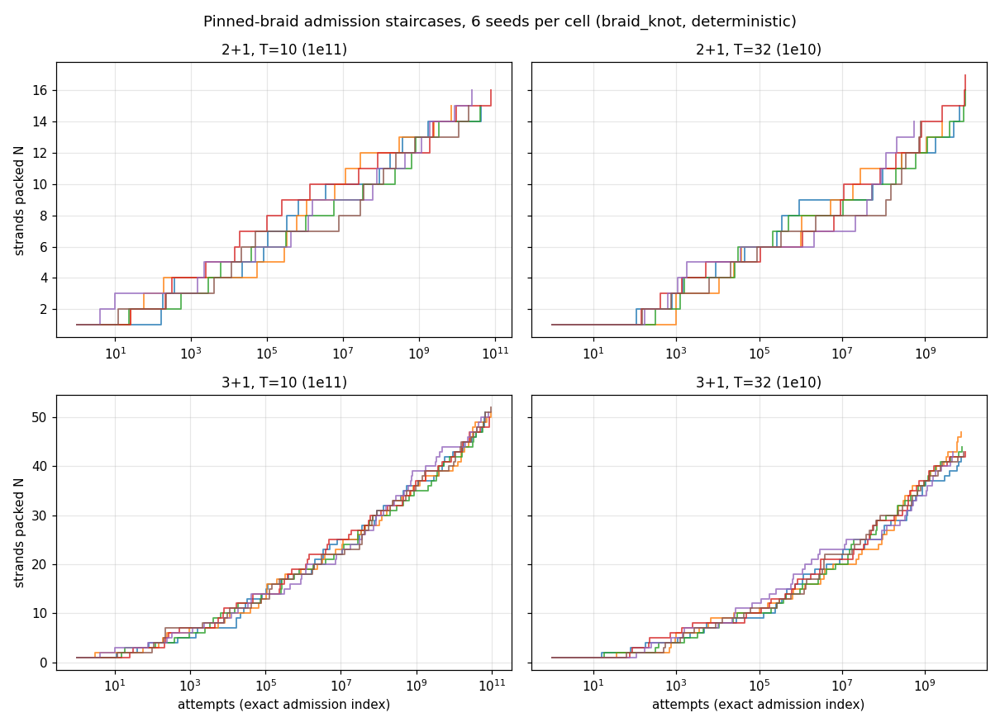
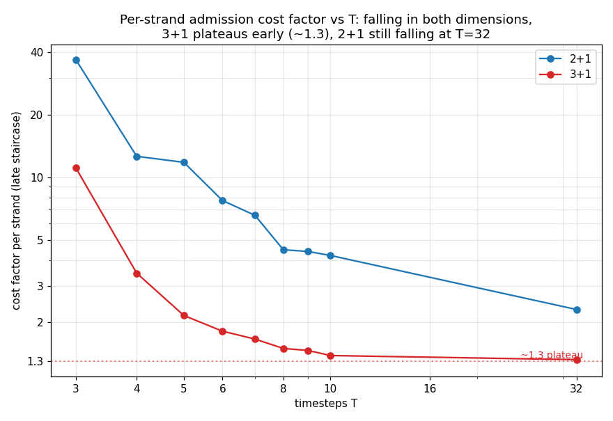

Maximum knottable strands: the conjectured 2, 8, 24 are search isochrones — deep packing finds 15+ (2+1) and 39+ (3+1) with no ceiling in sight
Chris's braid-viewer experiment (pin sin1 to zero + full frequency
band, T = 32, ~55 s) engine-ported as --pin-sin1 in both
CUDA engines and pushed 4–5 orders of magnitude deeper on
mother/kitt + a rented 4090 · STATUS: measured lower bounds;
no upper bound is known
The knot-capacity question — how many unique paths can pack
around a shared comoving anchor without touching — was
conjectured at d·2d−1 = 1, 4, 12, 32, 80 by
dimension (the d-hypercube edge count; README), revised by hands-on
viewer runs to 2, 8, 24 (d·2d, directed edges;
Chris: 2+1 gives 8 at T = 32 after ~55 s at a
50,000-consecutive-fails stop). The operational definition is now an
engine mode: --pin-sin1 zeroes every proposal's
comoving-offset amplitudes (verified line-for-line equivalent to the
viewer's checkbox and sampler), composed with the full-band
--terms T mode. Measured, RSA jam counts at a 1e-7
acceptance stop (2.7–4×108 attempts, ~200×
the viewer's depth), 4 seeds per cell:
3+1: T=10: 31–36 over 36 seeds (mode 33,
max 36) · T=16: 33–35 · T=32: 29–32
· T=64: 29–31.
Depth probes (1e10 budget, ~5×109
attempts): the 2+1 T=32 seed that sat at 9 reached
15; the 3+1 T=32 seed at 29 reached
39. (Superseded same day: the systematic
deep runs in the next entry push these to ≥17 and ≥52.)
Findings. (1) The viewer numbers are isochrones, not
capacities: the attempts-to-reach-N staircase at 2+1
T = 32 puts N = 8 at ~4–17M attempts —
almost exactly a 55-second browser run — with each further
strand costing roughly an order of magnitude more attempts (9 at
107–8, 15 by 5×109). Every proposed
ceiling (8, 12, 13, 24) has been exceeded by deeper search, in both
dimensions; fill fractions at the largest packs are still ~1–1.5%
of collision cells, so geometric room remains. Whether a finite jam
exists at all for the pinned packing — or whether it grows
log-like without bound, as the 3+1 unpinned jam approach does —
is open. (2) No arithmetic signature: prime T
(11/17/31/61) matches composite T at matched scale, extending the
archimedean null into the previously untested prime-T regime.
(3) Seed spread: RSA jam counts are a distribution
(3+1 T=10: 31–36 over 36 seeds) whose maximum keeps creeping
with sample size — every value here is a lower bound on the
true capacity, and the d·2d sequence does not
survive: the measured 2+1/3+1 values (≥15 / ≥39) are neither 8
nor 24, nor in a 1:3 ratio.
What would settle it: a depth-convention capacity (N at a
fixed acceptance depth — well-defined, but then a process
property rather than a geometric one), an optimization search
(exchange/repair moves past RSA's greed) for better lower bounds, or
a geometric upper-bound argument (packing strands within reach of a
shared anchor under the 2/T exclusion) — none attempted yet.
The knot staircase law: deterministic deep runs to 10¹¹ — cost grows a constant factor per strand, 3+1 plateaus at ~1.3×, and T=3 saturates at exactly 2d
New engine cuda/braid_knot.cu (commit
c11a6d2):
grid-free, counter-seeded candidates → bit-reproducible runs with
every admission logged at its exact global attempt index.
A/B-validated against the general engines
(0f775e6)
at matched budgets before use · deep cells: {2+1, 3+1} ×
{T=10, T=32}, 6 seeds, 10¹&sup0;–10¹¹ attempts;
low-T sweep T=2–9, 8 seeds, 10&sup9;, both dims
The exact-index staircases (below) settle what the earlier
batch-quantized tables could only hint at. The admission cost is
exponential in N with a constant ratio over 20+
consecutive strands — log-gap vs N is linear, with no upward
curvature that would signal an approaching jam. Frontiers at budget
end: 2+1 T=32: 14–17 (new record 17),
3+1 T=32: 42–47, 3+1 T=10:
49–52 at 10¹¹ (the shallow-era record for
that cell was 36 over 36 seeds), 2+1 T=10: 15–16.
Every deep run reproduces its shallow prefix admission-for-admission
(determinism verified end-to-end).

Admission staircases, 6 seeds per cell. All four cells are still
admitting at budget end — no jam signature anywhere in five
decades of search depth.
The per-strand cost factor γ(T, d) is monotone falling in T in
both dimensions: from 36.9× (2+1) / 11.1× (3+1) at the
degenerate-adjacent T=3 down to 2.31× / 1.32× at T=32.
3+1 plateaus early (≈1.5× by T=8,
≈1.3× from T=10 through T=32 — a 5% spread where a
mean-field excluded-volume estimate predicts 10×), while
2+1 is still falling at T=32. Whether γ2+1
plateaus at its own value (a permanent topological tax on braided
packing) or slides to the same ~1.3 asymptote (topological stiffness
as a finite-resolution effect) is now the sharpest open question;
T=16–64 runs would answer it. The 2+1 : 3+1 strand ratio at
matched attempts climbs with depth (2.2→3.3 at T=10;
1.8→2.9 at T=32) and tends to γ2/γ3
— 2.98 at T=32, which is why fixed-budget comparisons keep
landing near “3× more in 3+1.”

γ(T): per-strand admission cost factor. “T-invariance”
in 3+1 is an early plateau, not a dichotomy — and 2+1 has not
reached its asymptote (if any) by T=32.
The low-T sweep also produced the first saturated packs seen anywhere
in this system. T=2 is degenerate by construction
(the 2/T exclusion equals the torus half-width, so any second strand
collides everywhere: capacity exactly 1, both dimensions, all seeds).
T=3 lands on exactly 2d: 4 strands in 2+1
and 8 in 3+1, with zero seed variance (8/8 seeds each; one 3+1 seed at
7 within budget) — the 2+1 value coinciding with the old
d·2d−1 = 4 conjecture, though the 3+1 value
(8, not 12) breaks the pattern and the tiny 3-cell torus makes this
look like a geometric accident rather than vindication. Deepening
T=3 by 100× would test whether it is a true jam.
Takeaway for the capacity question: the staircase law
(γ and its T-trend), not any single integer per dimension, is
the object that distinguishes 2+1 from 3+1 — packed knots
are stable by construction in both dimensions (RSA never moves an
admitted strand); what differs is the growth complexity of adding to
them.